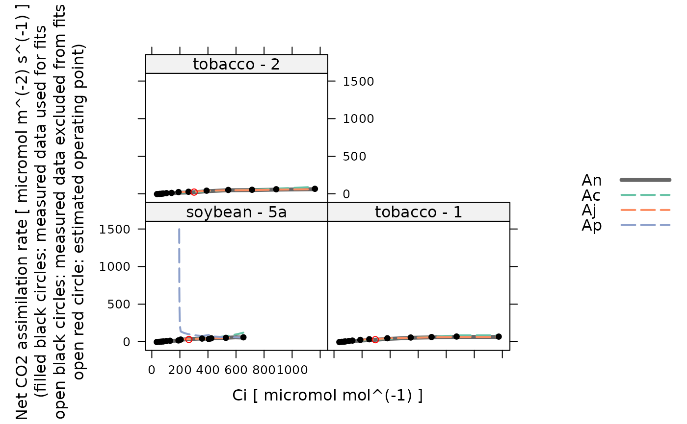
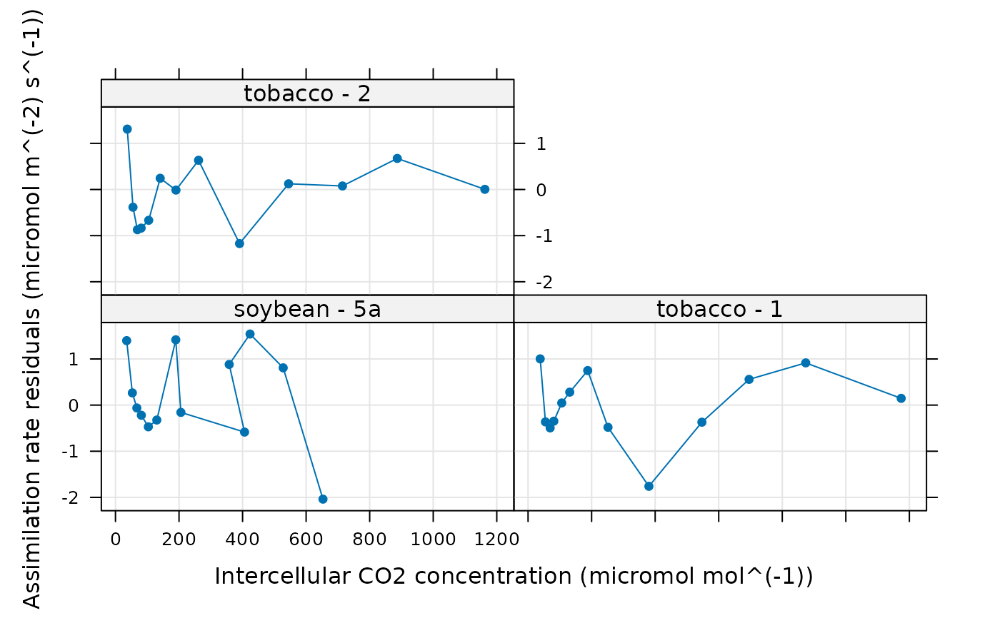
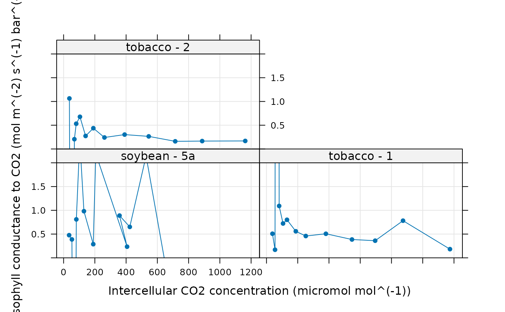

Fits a C3 assimilation model to an experimental curve
fit_c3_variable_j.RdFits a model to an experimentally measured C3 CO2 response curve + chlorophyll
fluorescence using the data in the exdf object along with a few other
user-supplied parameters. This function can accomodate alternative column
names for the variables taken from the data file in case they change at some
point in the future. This function also checks the units of each required
column and will produce an error if any units are incorrect.
Usage
fit_c3_variable_j(
replicate_exdf,
Ca_atmospheric,
a_column_name = 'A',
ca_column_name = 'Ca',
ci_column_name = 'Ci',
etr_column_name = 'ETR',
j_norm_column_name = 'J_norm',
kc_column_name = 'Kc',
ko_column_name = 'Ko',
phips2_column_name = 'PhiPS2',
qin_column_name = 'Qin',
rd_norm_column_name = 'Rd_norm',
total_pressure_column_name = 'total_pressure',
vcmax_norm_column_name = 'Vcmax_norm',
POc = 210000,
atp_use = 4.0,
nadph_use = 8.0,
curvature_cj = 1.0,
curvature_cjp = 1.0,
OPTIM_FUN = optimizer_deoptim(),
lower = list(),
upper = list(),
fit_options = list(),
cj_crossover_min = NA,
cj_crossover_max = NA,
require_positive_gmc = 'all',
gmc_max = Inf,
error_threshold_factor = 1.5,
calculate_confidence_intervals = FALSE,
remove_unreliable_param = FALSE
)Arguments
- replicate_exdf
An
exdfobject representing one CO2 response curve.- Ca_atmospheric
The atmospheric CO2 concentration (with units of
micromol mol^(-1)); this will be used byestimate_operating_pointto estimate the operating point.- a_column_name
The name of the column in
replicate_exdfthat contains the net assimilation inmicromol m^(-2) s^(-1).- ca_column_name
The name of the column in
replicate_exdfthat contains the ambient CO2 concentration inmicromol mol^(-1).- ci_column_name
The name of the column in
replicate_exdfthat contains the intercellular CO2 concentration inmicromol mol^(-1).- etr_column_name
The name of the column in
rc_exdfthat contains the electron transport rate as estimated by the measurement system inmicromol m^(-2) s^(-1).- j_norm_column_name
The name of the column in
replicate_exdfthat contains the normalizedJvalues (with units ofnormalized to J at 25 degrees C).- kc_column_name
The name of the column in
replicate_exdfthat contains the Michaelis-Menten constant for rubisco carboxylation inmicromol mol^(-1).- ko_column_name
The name of the column in
replicate_exdfthat contains the Michaelis-Menten constant for rubisco oxygenation inmmol mol^(-1).- phips2_column_name
The name of the column in
exdf_objthat contains values of the operating efficiency of photosystem II (dimensionless).- qin_column_name
The name of the column in
exdf_objthat contains values of the incident photosynthetically active flux density inmicromol m^(-2) s^(-1).- rd_norm_column_name
The name of the column in
replicate_exdfthat contains the normalizedRdvalues (with units ofnormalized to Rd at 25 degrees C).- total_pressure_column_name
The name of the column in
replicate_exdfthat contains the total pressure inbar.- vcmax_norm_column_name
The name of the column in
replicate_exdfthat contains the normalizedVcmaxvalues (with units ofnormalized to Vcmax at 25 degrees C).- POc
The partial pressure of O2 in the chloroplast, expressed in
microbar. This is often assumed to be the ambient value. For air measurements, this would be 21 percent O2, which is about 210000 microbar at standard atmospheric pressure. For low oxygen measurements, this would be 2 percent O2, which is about 20000 microbar.- atp_use
The number of ATP molecules used per C3 cycle.
- nadph_use
The number of NADPH molecules used per C3 cycle.
- curvature_cj
A dimensionless quadratic curvature parameter greater than or equal to 0 and less than or equal to 1 that sets the degree of co-limitation between
WcandWj. A value of 1 indicates no co-limitation.- curvature_cjp
A dimensionless quadratic curvature parameter greater than or equal to 0 and less than or equal to 1 that sets the degree of co-limitation between
WcjandWp. A value of 1 indicates no co-limitation.- OPTIM_FUN
An optimization function that accepts the following input arguments: an initial guess, an error function, lower bounds, and upper bounds. It should return a list with the following elements:
par,convergence,value, and (optionally)message. The default option is an evolutionary optimizer that runs slow but tends to find good fits for most curves.optimizer_nmkbcan also be used; it is faster, but doesn't always find a good fit.- lower
A list of named numeric elements representing lower bounds to use when fitting. Values supplied here override the default values (see details below). For example,
lower = list(Vcmax_at_25 = 10)sets the lower limit forVcmax_at_25to 10 micromol / m^2 / s.- upper
A list of named numeric elements representing upper bounds to use when fitting. Values supplied here override the default values (see details below). For example,
upper = list(Vcmax_at_25 = 200)sets the upper limit forVcmax_at_25to 200 micromol / m^2 / s.- fit_options
A list of named elements representing fit options to use for each parameter. Values supplied here override the default values (see details below). Each element must be
'fit','column', or a numeric value. A value of'fit'means that the parameter will be fit; a value of'column'means that the value of the parameter will be taken from a column inexdf_objof the same name; and a numeric value means that the parameter will be set to that value. For example,fit_options = list(alpha_g = 0, Vcmax_at_25 = 'fit', Tp = 'column')means thatalpha_gwill be set to 0,Vcmax_at_25will be fit, andTpwill be set to the values in theTpcolumn ofexdf_obj.- cj_crossover_min
To be passed to
error_function_c3_variable_j.- cj_crossover_max
To be passed to
error_function_c3_variable_j.- require_positive_gmc
To be passed to
error_function_c3_variable_j.- gmc_max
To be passed to
error_function_c3_variable_j.- error_threshold_factor
To be passed to
confidence_intervals_c3_variable_jwhencalculate_confidence_intervalsisTRUE.- calculate_confidence_intervals
A logical value indicating whether or not to estimate confidence intervals for the fitting parameters using
confidence_intervals_c3_variable_j.- remove_unreliable_param
A logical value indicating whether or not to remove unreliable parameter estimates; see below for details.
Details
This function calls calculate_c3_variable_j and
calculate_c3_assimilation to calculate values of net
assimilation. The user-supplied optimization function is used to vary the
values of alpha_g, J_at_25, Rd_at_25, tau,
Tp, and Vcmax_at_25 to find ones that best reproduce the
experimentally measured values of net assimilation. By default, the following
options are used for the fits:
alpha_g: lower = 0, upper = 1, fit_option = 0Gamma_star: lower = 0, upper = 200, fit_option ='column'J_at_25: lower = 0, upper = 1000, fit_option ='fit'Rd_at_25: lower = 0, upper = 100, fit_option ='fit'tau: lower = 0, upper = 1, fit_option ='fit'Tp: lower = 0, upper = 40, fit_option ='fit'Vcmax_at_25: lower = 0, upper = 1000, fit_option ='fit'
With these settings, alpha_g is set to 0, values of Gamma_star are
taken from the Gamma_star column of replicate_exdf, and the
other parameters are fit during the process (see fit_options above).
An initial guess for the parameters is generated by calling
initial_guess_c3_variable_j as follows:
cc_threshold_rdis set to 100 micromol / mol.If
alpha_gis being fit, thealpha_gargument ofinitial_guess_c3_aciis set to 0.5; otherwise, the argument is set to the value specified by the fit options.If
Gamma_staris being fit, theGamma_starargument ofinitial_guess_c3_aciis set to 40; otherwise, the argument is set to the value specified by the fit options.
Note that any fixed values specified in the fit options will override the values returned by the guessing function.
The fit is made by creating an error function using
error_function_c3_variable_j and minimizing its value using
OPTIM_FUN, starting from the initial guess described above.
The photosynthesis model used here is not smooth in the sense that small
changes in the input parameters do not necessarily cause changes in its
outputs. This is related to the final step in the calculations, where the
overall assimilation rate is taken to be the minimum of three enzyme-limited
rates. For example, if the assimilation rate is never phosphate-limited,
modifying Tp will not change the model's outputs. For this reason,
derivative-based optimizers tend to struggle when fitting C3 A-Ci curves. Best
results are obtained using derivative-free methods. It has been found that
DEoptim is often able to find a good fit, although it
may take a few minutes to run for a single curve.
Sometimes the optimizer may choose a set of parameter values where one or more
of the potential limiting carboxylation rates (Wc, Wj, or
Wp) is never the smallest rate. In this case, the corresponding
parameter estimate (Vcmax, J, or Tp) will be unreliable;
at best, it will represent a lower limit for the possible value of that
parameter. If remove_unreliable_param is TRUE, such values will
be set to NA in the outputs from fit_c3_variable_j.
Once the best-fit parameters have been determined, this function also
estimates the operating value of `Cc from the atmospheric CO2
concentration atmospheric_ca using
estimate_operating_point, and then uses that value to estimate
the modeled An at the operating point via
calculate_c3_assimilation.
This function assumes that replicate_exdf represents a single
C3 A-Ci curve. To fit multiple curves at once, this function is often used
along with by.exdf and consolidate.
Value
A list with two elements:
fits: Anexdfobject including the original contents ofreplicate_exdfalong with several new columns:The fitted values of net assimilation will be stored in a column whose name is determined by appending
'_fit'to the end ofa_column_name; typically, this will be'A_fit'.Residuals (measured - fitted) will be stored in a column whose name is determined by appending
'_residuals'to the end ofa_column_name; typically, this will be'A_residuals'.Values of fitting parameters at 25 degrees C will be stored in the
J_at_25,Rd_at_25, andVcmax_at_25columns.The other outputs from
calculate_c3_variable_jandcalculate_c3_assimilationwill be stored in columns with the usual names:tau,Tp,Vcmax_tl,Rd_tl,J_tl,Ac,Aj,Ap,gmc,J_F, andCc.
parameters: Anexdfobject including the identifiers, fitting parameters, and convergence information for the A-Ci curve:The best-fit values are stored in the
tau,Tp,J_at_25,Rd_at_25, andVcmax_at_25columns.For parameters that depend on leaf temperature, the average leaf-temperature-dependent values are stored in
X_tl_avgcolumns:J_tl_avg,Rd_tl_avg, andVcmax_tl_avg.Information about the operating point is stored in
operating_Cc,operating_Ci,operating_An, andoperating_An_model.The
convergencecolumn indicates whether the fit was successful (==0) or if the optimizer encountered a problem (!=0).The
fevalcolumn indicates how many cost function evaluations were required while finding the optimal parameter values.The residual stats as returned by
residual_statsare included as columns with the default names:dof,RSS,RMSE, etc.
Examples
# Read an example Licor file included in the PhotoGEA package
licor_file <- read_gasex_file(
system.file('extdata', 'c3_aci_1.xlsx', package = 'PhotoGEA', mustWork = TRUE)
)
# Define a new column that uniquely identifies each curve
licor_file[, 'species_plot'] <-
paste(licor_file[, 'species'], '-', licor_file[, 'plot'] )
# Organize the data
licor_file <- organize_response_curve_data(
licor_file,
'species_plot',
c(9, 10, 16),
'CO2_r_sp'
)
# Calculate the total pressure in the Licor chamber
licor_file <- calculate_total_pressure(licor_file)
# Calculate temperature-dependent values of C3 photosynthetic parameters
licor_file <- calculate_arrhenius(licor_file, c3_arrhenius_bernacchi)
# Fit just one curve from the data set (it is rare to do this). Here we also
# calculate confidence intervals.
# \donttest{
one_result <- fit_c3_variable_j(
licor_file[licor_file[, 'species_plot'] == 'tobacco - 1', , TRUE],
Ca_atmospheric = 420,
calculate_confidence_intervals = TRUE
)
# }
# Fit all curves in the data set (it is more common to do this). Here we use
# `optimizer_nmkb` to speed up the fit, although the results might be better
# with `optimizer_deoptim`
aci_results <- consolidate(by(
licor_file,
licor_file[, 'species_plot'],
fit_c3_variable_j,
Ca_atmospheric = 420,
OPTIM_FUN = optimizer_nmkb()
))
# View the fitting parameters for each species / plot
col_to_keep <- c(
'species', 'plot', # identifiers
'n_Wc_smallest', 'n_Wj_smallest', 'n_Wp_smallest', # number of points where
# each process is limiting
'tau', 'Tp', # parameters with temperature response
'J_at_25', 'Rd_at_25', 'Vcmax_at_25', # parameters scaled to 25 degrees C
'J_tl_avg', 'Rd_tl_avg', 'Vcmax_tl_avg', # average temperature-dependent values
'operating_Ci', 'operating_An', 'operating_An_model', # operating point info
'dof', 'RSS', 'MSE', 'RMSE', 'RSE', # residual stats
'convergence', 'convergence_msg', 'feval', 'optimum_val' # convergence info
)
aci_results$parameters[ , col_to_keep, TRUE]
#> species [UserDefCon] (NA) plot [UserDefCon] (NA)
#> 1 soybean 5a
#> 2 tobacco 1
#> 3 tobacco 2
#> n_Wc_smallest [fit_c3_variable_j] () n_Wj_smallest [fit_c3_variable_j] ()
#> 1 11 2
#> 2 10 3
#> 3 9 4
#> n_Wp_smallest [fit_c3_variable_j] ()
#> 1 1
#> 2 1
#> 3 0
#> tau [fit_c3_variable_j] (micromol m^(-2) s^(-1))
#> 1 0.9726786
#> 2 0.9793732
#> 3 0.7441397
#> Tp [fit_c3_variable_j] (micromol m^(-2) s^(-1))
#> 1 19.98135
#> 2 23.79105
#> 3 39.78223
#> J_at_25 [fit_c3_variable_j] (micromol m^(-2) s^(-1))
#> 1 479.8624
#> 2 631.0000
#> 3 426.2146
#> Rd_at_25 [fit_c3_variable_j] (micromol m^(-2) s^(-1))
#> 1 0.9363464
#> 2 1.8306364
#> 3 1.5912852
#> Vcmax_at_25 [fit_c3_variable_j] (micromol m^(-2) s^(-1))
#> 1 573.3218
#> 2 738.1945
#> 3 479.3439
#> J_tl_avg [fit_c3_variable_j] (micromol m^(-2) s^(-1))
#> 1 674.0935
#> 2 869.1543
#> 3 590.1882
#> Rd_tl_avg [fit_c3_variable_j] (micromol m^(-2) s^(-1))
#> 1 1.322335
#> 2 2.531653
#> 3 2.213071
#> Vcmax_tl_avg [fit_c3_variable_j] (micromol m^(-2) s^(-1))
#> 1 920.3110
#> 2 1150.5052
#> 3 752.9947
#> operating_Ci [estimate_operating_point] (micromol mol^(-1))
#> 1 264.3297
#> 2 294.7032
#> 3 301.2673
#> operating_An [estimate_operating_point] (micromol m^(-2) s^(-1))
#> 1 31.00316
#> 2 37.51608
#> 3 31.57904
#> operating_An_model [fit_c3_variable_j] (micromol m^(-2) s^(-1))
#> 1 30.52370
#> 2 36.27411
#> 3 30.18355
#> dof [residual_stats] (NA) RSS [residual_stats] ((micromol m^(-2) s^(-1))^2)
#> 1 8 16.66090
#> 2 8 16.70402
#> 3 8 17.95654
#> MSE [residual_stats] ((micromol m^(-2) s^(-1))^2)
#> 1 1.281607
#> 2 1.284924
#> 3 1.381273
#> RMSE [residual_stats] (micromol m^(-2) s^(-1))
#> 1 1.132081
#> 2 1.133545
#> 3 1.175276
#> RSE [residual_stats] (micromol m^(-2) s^(-1))
#> 1 1.443126
#> 2 1.444992
#> 3 1.498188
#> convergence [fit_c3_variable_j] () convergence_msg [fit_c3_variable_j] ()
#> 1 0 Successful convergence
#> 2 0 Successful convergence
#> 3 0 Successful convergence
#> feval [fit_c3_variable_j] () optimum_val [fit_c3_variable_j] ()
#> 1 1069 16.66090
#> 2 623 16.70402
#> 3 306 17.95654
# View the fits for each species / plot
lattice::xyplot(
Ac + Aj + Ap + A_fit + A ~ Ci | species_plot,
data = aci_results$fits$main_data,
type = 'b',
pch = 16,
auto = TRUE,
grid = TRUE,
xlab = paste0('Intercellular CO2 concentration (', aci_results$fits$units$Ci, ')'),
ylab = paste0('Assimilation rate (', aci_results$fits$units$A, ')')
)

# View the residuals for each species / plot
lattice::xyplot(
A_residuals ~ Ci | species_plot,
data = aci_results$fits$main_data,
type = 'b',
pch = 16,
auto = TRUE,
grid = TRUE,
xlab = paste0('Intercellular CO2 concentration (', aci_results$fits$units$Ci, ')'),
ylab = paste0('Assimilation rate residuals (', aci_results$fits$units$A_residuals, ')')
)

# View the estimated mesophyll conductance values for each species / plot
lattice::xyplot(
gmc ~ Ci | species_plot,
data = aci_results$fits$main_data,
type = 'b',
pch = 16,
auto = TRUE,
grid = TRUE,
xlab = paste0('Intercellular CO2 concentration (', aci_results$fits$units$Ci, ')'),
ylab = paste0('Mesophyll conductance to CO2 (', aci_results$fits$units$gmc, ')'),
ylim = c(0, 2)
)

# In some of the curves above, there are no points where carboxylation is TPU
# limited. We can automatically remove the unreliable Tp estimates.
aci_results <- consolidate(by(
licor_file,
licor_file[, 'species_plot'],
fit_c3_variable_j,
Ca_atmospheric = 420,
OPTIM_FUN = optimizer_nmkb(),
remove_unreliable_param = TRUE
))
aci_results$parameters[ , col_to_keep, TRUE]
#> species [UserDefCon] (NA) plot [UserDefCon] (NA)
#> 1 soybean 5a
#> 2 tobacco 1
#> 3 tobacco 2
#> n_Wc_smallest [fit_c3_variable_j] () n_Wj_smallest [fit_c3_variable_j] ()
#> 1 11 2
#> 2 10 3
#> 3 9 4
#> n_Wp_smallest [fit_c3_variable_j] ()
#> 1 1
#> 2 1
#> 3 0
#> tau [fit_c3_variable_j] (micromol m^(-2) s^(-1))
#> 1 0.9726786
#> 2 0.9793732
#> 3 0.7441397
#> Tp [fit_c3_variable_j] (micromol m^(-2) s^(-1))
#> 1 19.98135
#> 2 23.79105
#> 3 NA
#> J_at_25 [fit_c3_variable_j] (micromol m^(-2) s^(-1))
#> 1 479.8624
#> 2 631.0000
#> 3 426.2146
#> Rd_at_25 [fit_c3_variable_j] (micromol m^(-2) s^(-1))
#> 1 0.9363464
#> 2 1.8306364
#> 3 1.5912852
#> Vcmax_at_25 [fit_c3_variable_j] (micromol m^(-2) s^(-1))
#> 1 573.3218
#> 2 738.1945
#> 3 479.3439
#> J_tl_avg [fit_c3_variable_j] (micromol m^(-2) s^(-1))
#> 1 674.0935
#> 2 869.1543
#> 3 590.1882
#> Rd_tl_avg [fit_c3_variable_j] (micromol m^(-2) s^(-1))
#> 1 1.322335
#> 2 2.531653
#> 3 2.213071
#> Vcmax_tl_avg [fit_c3_variable_j] (micromol m^(-2) s^(-1))
#> 1 920.3110
#> 2 1150.5052
#> 3 752.9947
#> operating_Ci [estimate_operating_point] (micromol mol^(-1))
#> 1 264.3297
#> 2 294.7032
#> 3 301.2673
#> operating_An [estimate_operating_point] (micromol m^(-2) s^(-1))
#> 1 31.00316
#> 2 37.51608
#> 3 31.57904
#> operating_An_model [fit_c3_variable_j] (micromol m^(-2) s^(-1))
#> 1 30.52370
#> 2 36.27411
#> 3 30.18355
#> dof [residual_stats] (NA) RSS [residual_stats] ((micromol m^(-2) s^(-1))^2)
#> 1 8 16.66090
#> 2 8 16.70402
#> 3 8 17.95654
#> MSE [residual_stats] ((micromol m^(-2) s^(-1))^2)
#> 1 1.281607
#> 2 1.284924
#> 3 1.381273
#> RMSE [residual_stats] (micromol m^(-2) s^(-1))
#> 1 1.132081
#> 2 1.133545
#> 3 1.175276
#> RSE [residual_stats] (micromol m^(-2) s^(-1))
#> 1 1.443126
#> 2 1.444992
#> 3 1.498188
#> convergence [fit_c3_variable_j] () convergence_msg [fit_c3_variable_j] ()
#> 1 0 Successful convergence
#> 2 0 Successful convergence
#> 3 0 Successful convergence
#> feval [fit_c3_variable_j] () optimum_val [fit_c3_variable_j] ()
#> 1 1069 16.66090
#> 2 623 16.70402
#> 3 306 17.95654